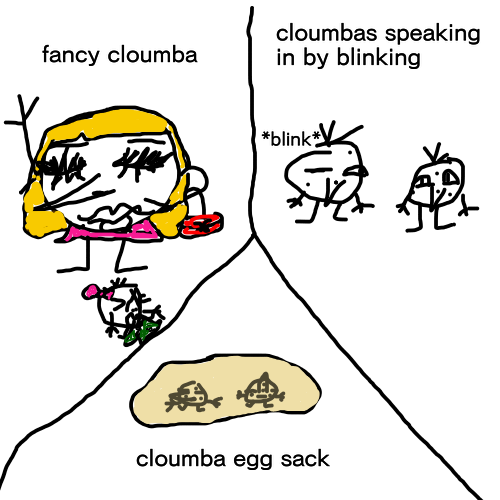

cloumbas are creatures there are 4 clans Cloumbas,Squalumbas,Tralumbas,Trilumbas Cloumbas are circles and walk on 2 legs and have 2 arms Squalumbas are Squares and also walk on 2 legs with 2 arms Tralumbas are triangles and walk on 2 legs also with 2 arms Trilumbas are Rhombuses and stand on 2 legs with 2 arms but then flip onto there back and run around on all fours facing up
for the Cloumbas,Spualumbas,and Tralumbas with a side nose will become leaders/deputys or become a warrior Down nose Cloumbas are warriors they use their nose like whips or spears they can also become a deputy but NEVER a leader up nose Cloumbas are the medice cloumba because they can smell very well so they can find herbs easly but they can NEVER become a warrior,deputy,or leader but the Trilumbas for the leaders/deputys medice cloumba and warrior are the same but for warriors they way they attack is by kicking with their legs when they'er on all fours
each clan has their own gods 2 they worship and 1 main god all cloumbas worship even the ones out of clans the 2 gods cloumbas worship are lady ruth and sir skin cancer (those are they only ones i've made up so far)
Cloumbas born with difects or any part of there god they get scarificed Cloumbas are born in sacks and hatch from them like eggs they eat their childern and have to try and run away and if they survive to the apprentice age they go back to the clan and continue living clan life Cloumbas speak to each other by blinking Fancy cloumbas can talk and they are like humans just they are covered in expensive brands
